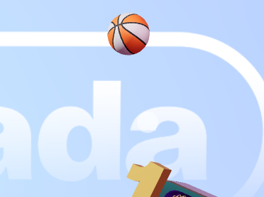

1. What was the first thing you paid attention to when interacting with the experience?
The first thing I paid attention to upon clicking this link is Luniverse's cute pastel colours, the miniature 3D models and the way the mouse was able to move the world in such an unique way. Whenever I hovered my mouse over these 3D islands, the 3D objects would float up in a cheerful manner which was mesmerising to watch.
3. What part of the experience did you spend the most time engaging with?
I have noticed that I spent the most time trying to shoot the soccer ball within this experience as it was satisfying when you shot the ball and a bunch of coins would burst out of the goal. Another part of the experience I was engaging with was the basketball by testing the limits of how high it can go by clicking it multiple times. It can only surpass a certain limit before you can't click it in the air anymore.

